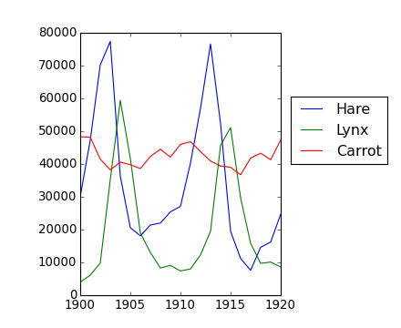
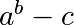
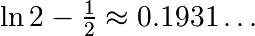
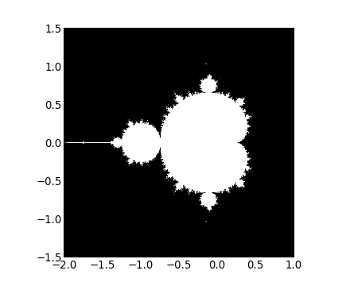

Form the 2-D array (without typing it in explicitly):
[[1, 6, 11],
[2, 7, 12],
[3, 8, 13],
[4, 9, 14],
[5, 10, 15]]
and generate a new array containing its 2nd and 4th rows.
Divide each column of the array:
>>> import numpy as np
>>> a = np.arange(25).reshape(5, 5)
elementwise with the array b = np.array([1., 5, 10, 15, 20]). (Hint: np.newaxis).
Harder one: Generate a 10 x 3 array of random numbers (in range [0,1]). For each row, pick the number closest to 0.5.
Let’s do some manipulations on numpy arrays by starting with an image of a racoon. scipy provides a 2D array of this image with the scipy.misc.face function:
>>> from scipy import misc
>>> face = misc.face(gray=True) # 2D grayscale image
Here are a few images we will be able to obtain with our manipulations: use different colormaps, crop the image, change some parts of the image.

Let’s use the imshow function of pylab to display the image.
>>> import pylab as plt >>> face = misc.face(gray=True) >>> plt.imshow(face) <matplotlib.image.AxesImage object at 0x...>
specified for it to be displayed in grey.
>>> plt.imshow(face, cmap=plt.cm.gray)
<matplotlib.image.AxesImage object at 0x...>
remove 100 pixels from all the borders of the image. To check the result, display this new array with imshow.
>>> crop_face = face[100:-100, 100:-100]
need to create a mask corresponding to the pixels we want to be black. The center of the face is around (660, 330), so we defined the mask by this condition (y-300)**2 + (x-660)**2
>>> sy, sx = face.shape
>>> y, x = np.ogrid[0:sy, 0:sx] # x and y indices of pixels
>>> y.shape, x.shape
((768, 1), (1, 1024))
>>> centerx, centery = (660, 300) # center of the image
>>> mask = ((y - centery)**2 + (x - centerx)**2) > 230**2 # circle
then we assign the value 0 to the pixels of the image corresponding to the mask. The syntax is extremely simple and intuitive:
>>> face[mask] = 0
>>> plt.imshow(face)
<matplotlib.image.AxesImage object at 0x...>
face_locket.py then execute this script in IPython with %run face_locket.py.
Change the circle to an ellipsoid.
The data in populations.txt describes the populations of hares and lynxes (and carrots) in northern Canada during 20 years:
>>> data = np.loadtxt('data/populations.txt')
>>> year, hares, lynxes, carrots = data.T # trick: columns to variables
>>> import matplotlib.pyplot as plt
>>> plt.axes([0.2, 0.1, 0.5, 0.8])
<matplotlib.axes...Axes object at ...>
>>> plt.plot(year, hares, year, lynxes, year, carrots)
[<matplotlib.lines.Line2D object at ...>, ...]
>>> plt.legend(('Hare', 'Lynx', 'Carrot'), loc=(1.05, 0.5))
<matplotlib.legend.Legend object at ...>
[source code, hires.png, pdf]
Computes and print, based on the data in populations.txt...
... all without for-loops.
Solution: Python source file
Write a function f(a, b, c) that returns . Form a 24x12x6 array containing its values in parameter ranges [0,1] x [0,1] x [0,1].
Approximate the 3-d integral

over this volume with the mean. The exact result is:  — what is your relative error?
(Hints: use elementwise operations and broadcasting. You can make np.ogrid give a number of points in given range with np.ogrid[0:1:20j].)
Reminder Python functions:
def f(a, b, c):
return some_result
Solution: Python source file
[source code, hires.png, pdf]
Write a script that computes the Mandelbrot fractal. The Mandelbrot iteration:
N_max = 50
some_threshold = 50
c = x + 1j*y
for j in xrange(N_max):
z = z**2 + c
Point (x, y) belongs to the Mandelbrot set if  <
some_threshold.
<
some_threshold.
Do this computation by:
>>> import matplotlib.pyplot as plt >>> plt.imshow(mask.T, extent=[-2, 1, -1.5, 1.5]) <matplotlib.image.AxesImage object at ...> >>> plt.gray() >>> plt.savefig('mandelbrot.png')
Solution: Python source file

Markov chain transition matrix P, and probability distribution on the states p:
Write a script that works with 5 states, and:
Remember to normalize the eigenvector — I didn’t...
Toolbox: np.random.rand, .dot(), np.linalg.eig, reductions, abs(), argmin, comparisons, all, np.linalg.norm, etc.
Solution: Python source file

{kind=link}
{kind=link}